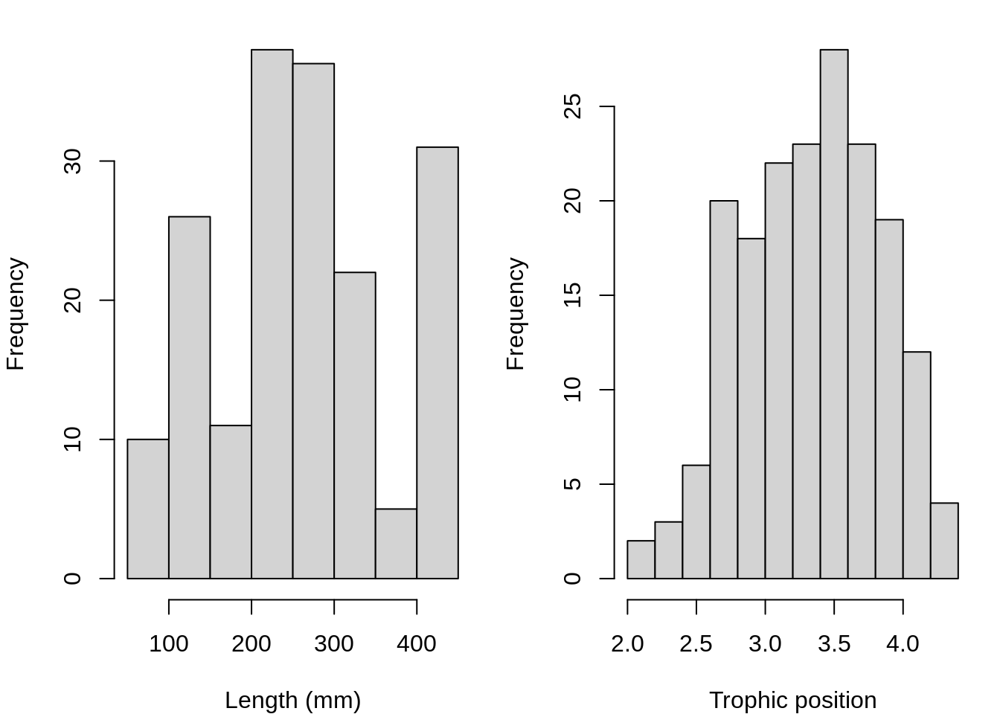
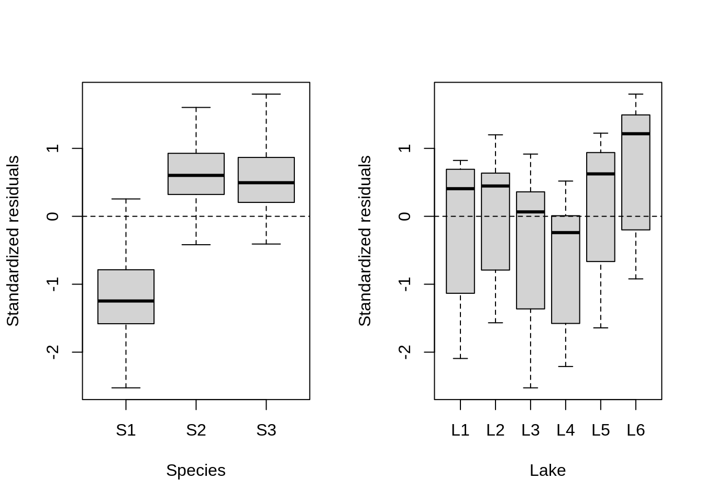

Chapter 9 Step 1. A priori model building
What we know a priori:
We want to determine if the trophic position can be predicted by body length, while taking into account the variation between species and lakes. So we want a model that looks like this:
\[TP_{ijk} \sim Length_i + Lake_j + Species_k + \epsilon_{ijk}\]
where:
- TP_ijk is the trophic position of individual (i) from lake (j) of species (k)
- ε are the residuals of the model (i.e. the unexplained variation).
9.1 Check data structure
Does the data have the right structure?
Look at the data structure:
## 'data.frame': 180 obs. of 4 variables:
## $ Lake : chr "L1" "L1" "L1" "L1" ...
## $ Fish_Species: chr "S1" "S1" "S1" "S1" ...
## $ Fish_Length : num 105 195 294 414 237 ...
## $ Trophic_Pos : num 2.6 2.7 2.74 2.74 2.79 ...Now look at the distribution of samples for each factor:
## Fish_Species
## Lake S1 S2 S3
## L1 10 10 10
## L2 10 10 10
## L3 10 10 10
## L4 10 10 10
## L5 10 10 10
## L6 10 10 10This dataset is perfectly balanced, but mixed models can be used to analyze unbalanced experimental plans, as it is often the case in ecology!
Let’s also look at the distribution of continuous variables:
# Look at the distribution of continuous variables:
par(mfrow = c(1, 2), mar = c(4, 4, 1, 1))
hist(fish.data$Fish_Length, xlab = "Length (mm)", main = "")
hist(fish.data$Trophic_Pos, xlab = "Trophic position", main = "")
Major deviations could cause heteroscedasticity problems. If necessary, make transformations. In this case, the data seems OK.
9.2 Check collinearity
Check for collinearity between your explanatory variables
The problem with collinear predictors is simply that they explain the same thing, so their effect on the response variable will be confounded in the model.
In this example, there is no risk of collinearity with only one continuous variable. If you had another continuous variable (var2), one simple way to check for collinearity is cor(var1, var2)
Here an example of collinearity.
9.3 Challenge 3
This is a thinking problem!
Given our data, What additional measures could we have taken in the field that could have been strongly correlated with body length?
Challenge 3 Solution:
There are multiple potential answers here.
One example is fish body mass - this variable is strongly correlated with fish length. Therefore, we do not want to include these two variables in the same model.
9.4 Consider scale
Consider the scale of your data
If two variables in the same model have very different scales, the mixed model will likely return a convergence error when trying to compute the parameters.
The Z-correction standardizes the variables and solve this problem (use function scale() in R):
\[z = \frac{x-mean(x)}{standard.deviation(x)}\] Consider the scale of the variables within our dataset:
Body length -> Long scale Trophic position -> Short scale
Because our data have very different scales of variation, we apply the Z-correction
# Standardized length, 'by hand'
fish.data$Z_Length <- (fish.data$Fish_Length - mean(fish.data$Fish_Length))/sd(fish.data$Fish_Length)
# Standardized trophic position, with the function scale
fish.data$Z_TP <- scale(fish.data$Trophic_Pos)9.5 Do you need a LMM?
Determine if you need a mixed model
To find out if a mixed model is needed for your data, you need to determine whether it is important to consider the random effects that might influence the relationship you are interested in (in our case, lake and species).
We can do this by:
- Creating a linear model without random effect
- Calculating the residuals of this linear model
- Plot the residuals against the levels of the potential random factors
Create a linear model without random effects
Calculate residuals of this linear model
Plot the residuals against the levels of the potential random factors
par(mfrow = c(1, 2))
plot(lm.test.resid ~ as.factor(fish.data$Fish_Species), xlab = "Species",
ylab = "Standardized residuals")
abline(0, 0, lty = 2)
plot(lm.test.resid ~ as.factor(fish.data$Lake), xlab = "Lake",
ylab = "Standardized residuals")
abline(0, 0, lty = 2)
These results suggest that there is residual variance that could be explained by these factors, so they should be included in a mixed effect model!